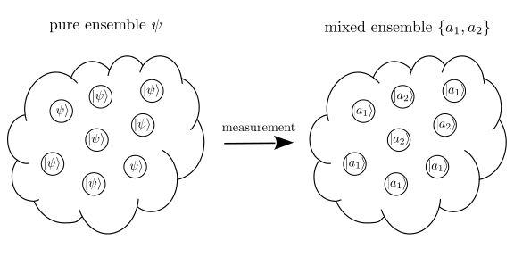

1. Quantum states and measurement#
In the standard description of quantum mechanics states that the state of a quantum system is a vector in a Hilbert space and the Schrödinger equation determines the time evolution of the state. However, it does not provide the whole picture of quantum states and their evolution. In this chapter, first a summary of the more complete picture of quantum states is given. Secondly, we describe their time evolution beyond the Schrödinger equation.
1.1. What \(|\psi\rangle\) means?#
When we say an electron is in a state \(|\psi\rangle\), which is a ket vector in a Hilbert space, what does it actually mean? It has been debated more than 100 years since the inception of quantum mechanics that what is the ontology of a wave function. Even now, we are still debating. In the standard theory of quantum mechanics, While it is said that \(|\psi\rangle\) contains all the information about the state of the quantum object, it does not give us a unique outcome when we observe the object. Instead the outcome of a measurement is stochastic. More specifically, when we measure an observable \(\hat{A}\) which is an operator in the same Hilber space as \(|psi\rangle\), the outcome is one of the eigenvalues of \(\hat{A}\). The probability to obtain a particular eigenvalue \(a_{n}\) is given by the Born rule \(p_{n} = |\langle a_{n}|\psi\rangle|^2\). Thus, the state \(|\psi\rangle\) provides us the probability. Here we are using the standard theory of quantum measurement for the sake of understanding the concept of quantum states. However, the quantum measurement of photons are quite different and a bit more complicated. We will discuss it in a separate section.
Now, we turn to the standard interpretation of the quantum probability. We consider an ensemble of the infinitely many identical quantum objects prepared exactly in the same way. We pick one member of the ensemble and measure \(\hat{A}\). The chance that we obtain outcome \(a_{n}\) is \(p_{n}\). If you pick \(N\) members from the ensemble approximately, \(p_{n}N\) produces \(a_{n}\). Hence, the \(\psi\) should be assigned to the ensemble. When we say that an electron is in a state \(|\psi\rangle\), it means that the electron belongs to the ensemble \(\psi\).
Since all members in the ensemble are identically prepared, they also evolve exactly in the same way, \(|\psi(t)\rangle = e^{-i H t} |\psi(0)\rangle\) where \(H\) is the Hamiltonian. Hence, the Schrödinger equation actually determines the evolution of the ensemble. The theory of quantum mechanics can’t tell what individual particles are evolving. It tells only the statistical behavior of the ensemble. We can’t describe the behavior of a particular particle using the quantum mechanics.
Now, this interpretation raises several questions. Here I list three, which is relevant to the current
What happens to the ensemble after the measurement?
What kind of time evolution is the measurement? It looks like a jump from \(|\psi\rangle\) to \(|a_{n}\rangle\).
What happens if we just continuously look at a particular member of the ensemble? (Current technology allows us to monitor a single quantum object.)
1.2. The ensemble after a measurement#
Consider an ensemble \(\psi\) consisting of \(N\) members which are all identical. The size of the ensemble \(N\) is assumed to be very (or infinitely) large Such an ensemble represent a pure state. We measure an observable \(\hat{A}\) whose eigenvalues and corresponding eigen vectors are denoted as \(a_{n}\) and \(|a_{n}\rangle\), respectively. Upon the measurement, the state of some members instantaneously jumps to \(|a_{1}\rangle\), the state of another group jumps to \(a_{1}\), and and so on. After measuring all \(N\) members, the ensemble \(\psi\) is empty and there are many small ensembles, \(a_{1}\), \(a_{1}\), \(\cdots\) The size of the ensembles are \(p_{1} N\), \(p{2}N\), \(\cdots\) where \(p_{n} = |\langle a_{n}|\psi\rangle|^2\). Each ensemble \(a_{n}\) represents a pure state. Now, we consider an ensemble containing original \(N\) members. Obviously, the ensemble is not \(\psi\) but consists of subensembles \(\{a_{1},a_{2},\cdots\}\). When an ensemble contains more than one pure state subensembles, it represents a mixed state. The measurement transformed a pure state ensemble \(\psi\) to a mixed state ensemble \(\{a_{1},a_{2},\cdots\}\). (See Fig. 1.1)
It is possible to merge two pure ensembles \(\psi\) and \(\phi\) to form a mixed ensemble \(\{\psi,\phi\}\). \(|psi\rangle\) and \(|phi\rangle\) do not have to be orthogonal.

Fig. 1.1 Quantum measurement transforms a pure ensemble \(\psi\) to a mixed ensemble \(\{a_{1},a_{2}\}\). The weight of subensemble is \(p_{1} = 5/8\) for \(a_{1}\) and \(p_{1} = 3/8\) for \(a_{2}\).#
Now a question is how to mathematically describe the mixed ensemble. Listing subensembles as \(\{\psi_{1},\psi_{2},\cdots\}\) with the corresponding probability \(\{p_{1},p_{2}.\cdots \}\) is sufficient but inconvenient. There is a better way, the density matrix defined by
which must satisfy
positivity: \(\rho \ge 0\). This means all the eigenvalues of \(\rho\) is non-negative.
normalization: \(\text{tr}\rho = 1\). This guarantees that the normalization of the probability, \(\sum_{n} p_{n} = 1\).
When there is only one term, that is \(\rho = |\psi \rangle\langle \psi|\), we say that the system is in a pure state. Otherwise, the system is in a mixed state[1]. There is an easy way to check if a given system is mixed or pure. Calculate purinty \(\text{tr} \rho^2 \le 1\). If it is \(1\), then the state is pure and if less than \(1\), it is mixed.
The expectation value of \(\hat{A}\) for a pure state is given by \(\langle A \rangle = \langle \psi | \hat{A} | \psi \rangle\) as we know it. Using the density matrix, it can be written as \(\text{tr} (\hat{A} \rho)\). To get the expectation value for a mixed state, first we evaluate quantum mechanical expectation value for each subensemble \(\langle \psi_{1} | \hat{A} | \psi_{1} \rangle\), \(\langle \psi_{2} | \hat{A} | \psi_{2} \rangle\), \(\cdots\). Taking another average over the classical probability \(p_{n}\), we obtain \(\langle A \rangle = \sum_{n} p_{n} \langle \psi_{n} | \hat{A} | \psi_{n} \rangle\) which turns out to be exactly \(\text{tr} (\hat{A} \rho)\). Therefore, we can calculate the expectation value using the same formula for both pure and mixed states.
The probability \(p_{n}\) is given \(p_{n} = \text{tr}(|\psi_{n}\rangle\langle\psi_{n}| \rho )\), which is the expectation value of \(|\psi_{n}\rangle\langle\psi_{n}|\). A matrix element of an operator \(\hat{A}\) is given by \(\text{tr} (|u\rangle \langle v| \rho) = \langle v | \rho |u \rangle\). Another useful use of the density operator is the von Neumann entropy \(S_{N} = - \text{tr} (\rho \ln \rho)\) which measures the amount of information stored in the state.
The time evolution of state vector \(\psi\rangle\) is determined by the Schrödinger equation or equivalently \(|\psi(t)\rangle = e^{-i H (t-t_{0}} |\psi(t_{0})\rangle\). Then, the corresponding density operator evolves as \(\rho(t) = e^{-i H (t-t_{0}} \rho(t_{0}) e^{i H (t-t_{0}}\) from which we find the equation of motion
which is known as the Liouville-von Neumann equation. This equation of motion is valid also for mixed states. Since the Liouville-von Neumann equation is equivalent to the Schrödinger equation, it represents a unitary evolution of the system. In fact, taking the trace of the Liouville-von Neumann equation, we can show that \(\text{tr} \rho\) is invariant and thus the norm is conserved.